The Spoiler Filled Cyberpunk Edgerunners 2 Review
Hey choom! Are you curious to know what we thought about Cyberpunk Edgerunners 2? We have one that you can read that includes no spoilers at all. This one, though? This one's filled with preem spoiler content, discussion of the themes and ideas, and the authoress' thoughts on what makes Edgerunners 2 tick. So if you haven't seen it and want to not know all that, hit that back button! And if you DO wanna know all the details, well, read on. But you've been warned!
Welcome back readers to our second review of Edgerunners 2; yesterday we talked about generally why you should consider giving the show a watch and what makes it a successful sequel to the first Edgerunners, but also the ways in which it does enough unique and interesting things to be considered on its own. During that review, I tried really hard to avoid spoiling anything that wouldn't be known through trailers, the show's website, or just the first episode itself, but that also limited exactly what could be talked about or covered in greater detail.
In this second, more in-depth review, I'll be talking about the series in greater detail, working through the cast, thematics, and cinematic considerations. You can sort of consider this half review, half critical analysis of the series; if you're the type who wants to know absolutely everything about a piece of media before you give it wider consideration, or perhaps the type who, after watching it, wants a more in-depth dive, then I hope this will provide exactly that! So, let's get started, choomfie.
Man With a Movie Camera
Roman is the lead protagonist of Edgerunners 2, a 12 year old boy with dreams of making it big in Night City through the power of film. Or perhaps, in his delusion, he simply wants to prove that film is something worth watching, and he, in turn, is someone worth remembering; Cyberpunk, the series, has a heavy focus on fame, being remembered, and of making your life against the unwavering tides of ennui mean something. It was a theme in the first Edgerunners, and David Martinez's downfall, and in the 2077 game, your role as V follows similar paths.
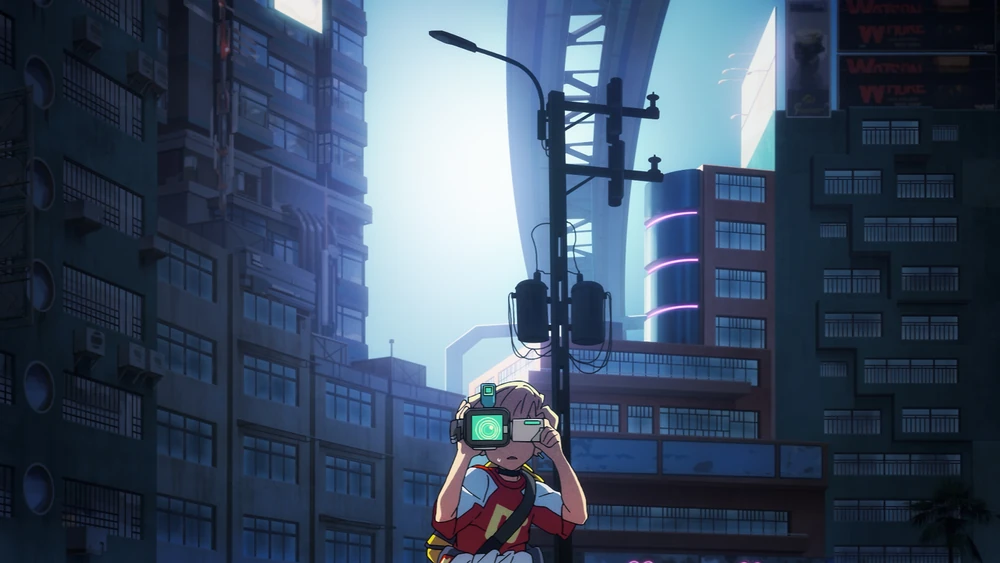
But that isn't unique to Edgerunners, either, and perhaps with Roman, it's one of the more overt explorations of film-making as storytelling, particularly, the story of the person holding the camera. There's a long lineage of auteur theory that asks to consider the person behind the camera and the world they want to show through their film, and Roman is certainly that sort of person. The entire run of Edgerunners, up until the final arc, routinely features views of what is happening through Roman's camera, rather than his own direct point of view.
Roman's heart is fairly simple at first, wanting to make it big, wanting to get a 35mm camera, and his first target, Talia, puts him on a path that mixes him up with the revenge searching D. For a young boy like Roman, no matter his desire for fame or success, D presents as a cool, mysterious friend. An older brother type, or perhaps a dog in search of a home. Roman immediately attaches himself to D, and through filming his journey of revenge, gets himself sucked into things he likely could never comprehend.
There's a point early on when Roman watches David brutally interrogate a Maelstrom member named Helios, and the show continues swapping between Roman's camera, and then his own "direction"; as David is too forceful and violent, Roman steps in to ask questions, suggest the next scene, and help create the script of the encounter for him to film. Roman's passion for film combines with his desire to been seen, to live and tell stories through the screen. But like many creatives, Roman discovers that it's just as easy to co-opt creative energy as it is to exploit it, and as D's revenge spiral blows out of control, Roman finds himself disillusioned with helping him commit what has become wanton violence.

The series ends much as it begins for Roman: filming, watching the stories of others through his camera, seeing how D's story ends and saying his goodbyes to Weak and Talia; and, finally, left alone back where he started in Night City. As a protagonist, Roman is far less powerful than David or even the other characters in Edgerunners 2, and his humanity--or, specifically, his organic body--makes up a core component of much of the theme running through the show. Roman's lack of implants, chrome, augmentations and otherwise leaves him mostly on the sidelines of all of the action. He can't see Capri, nor is he affected by her, he can't stop any of the violence or fighting, and he also can't do anything physically to save Talia or others; all he can do is be there for them and show that he cares.
Edgerunners 2 has a consistent theme of storytelling, connections, and communication, and Roman serves as the series heart; without him, the story doesn't work, and his fascination with the camera and movies serves as a vector to cover those ideas and explore them as a work of art. In the final episode, Then Everyone Went Home, Roman again resumes using his camera, but more importantly, actually observes the lives and conflicts of those around him; when he arrives before much of the climax, Capri even teases him, "What, no camera today"? Roman is as much the protagonist as he is the camera, and for the viewer, the point of view for a majority of the story's heart, and also what makes Edgerunners 2 so much different from its predecessor: this is a Night City in which humanity, hope, and connection actually matter.
A Day Late and a Dollar Short
Perhaps the biggest bait and switch that Edgerunners 2 pulls is that of King, whose full name is revealed tobe Weak Kingsley. There's certainly some funny consideration for who in the world names their kid "Weak" even in a cyber dystopian future, but Weak first appears as a shockingly huge, bulging man who seems to be the muscle of the show. Unfortunately for him (and possibly for viewers expecting something different), Weak is suffering from Cyberpsychosis, which leads the job he's on in the first episode to go completely sideways, setting the plot in motion.

It also leads Weak to getting all of his implants removed and downgraded, told he can never chrome out again, and also nearly destitute. In some ways, it seems like Weak's fate is a very tongue in cheek start to the story in the way that David's life, one ruined by debt and ending with his own Cyberpsychosis, is something that could have been avoided with enough money, apparently. Still, Weak finds himself completely at the mercy of Avida, a woman that at first seems to be someone who has passed on, as only Weak sees her in his episodes, but it turns out she is not only very much alive, but needs Weak to find and collect her daughter, Talia.
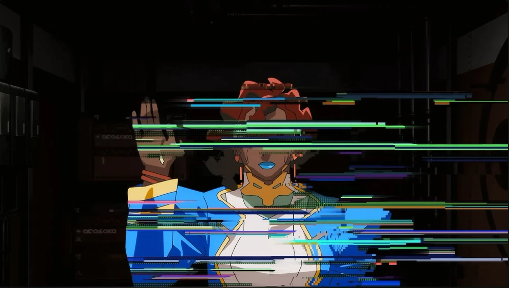
She ain't who you think she is, literally.Weak sucks, and he knows it. He spends the series learning not to suck, but it costs him just about everything: his augmentations, his crew, his prestige, his money, and Avida, the woman that continues to selfishly press him to save Talia. She even lies to him, telling him that Talia is his--their--daughter, all to manipulate him into "saving" her (more on that later). In the end, though, Weak really is, well, not weak. He continues perservering, using the second chance he's been given despite all of its flaws, to help Talia, a girl he believes is his daughter, only to become the actual meme itself: he isn't the step dad, he's the dad who stepped up. Rather than being a badass unstoppable berserker, Weak is a schlubby manfailure who ends the series giving up all of the things that held him back to be the person who can do right by someone; in the final climax, he gives up on his obsession with Avida (by literally having her ashes scattered) and his legacy, leaving the jacket of "King" behind. His final line, "let's live!", through tears and sniffling, is hard not to smile at.
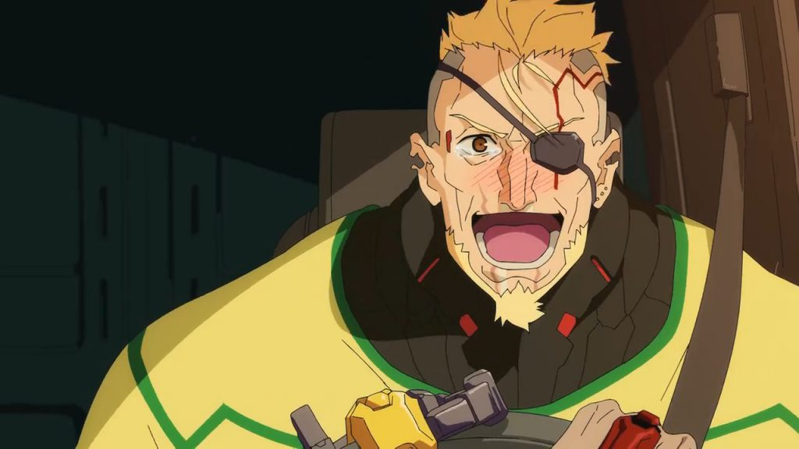
I love this dude.Weak reminds me of a few characters, and when I mentioned that Edgerunners 2 has a Cowboy Bebop vibe to it, it is pretty easy to draw the line between Jet Black and Weak Kingsley, although I suppose one would probably argue that Jet is maybe a bit less of a failman than Weak is, they fulfill a somewhat similar role in the ensemble; I have to admit he also reminds me of Trigun's protagonist Vash, at least from the earlier episodes in which he's a goofier, less surefire hero. As far as an "Ossan" (Older man) character goes, Weak is a fun character whose triumph in the end, that of letting go of his past and vowing to live his own life away from Night City with Talia, feels like the best possible ending for him, as well as strengthening the overall narrative of season 2's focus on humanity.
Payback
Where David Martinez's story is sold as one of righteous fury and an attempt to make a name for one's self against an uncaring city, the story first introduces D's search for revenge as something personal, primal, but ultimately noble: to find out who was responsible for the eradication of the Snake clan from the Badlands that he hails from. What becomes clear is that D is haunted, constantly seeing nightmares of the people that died and the carnage that was left behind int he wake of the assault on his clan. D's eventual meeting with Roman, and their work on creating videos that show D's increasing vigilante action against Arasaka, also brings him into contact with the constructed personality Capri, a digital being that gives David superhuman (bordering on supernatural) powers that he begins to use without a care in the world for what it results in.
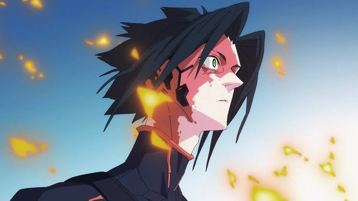
D's quest for revenge at any costs soon leads him and Roman to split, primarily over the interference of a woman named Yupi, whose own personal quest for vengeance against Arasaka pushes D further and further into the path of violence. While revenge narratives are rarely ever "pro" revenge, D's story is even more blatant about it as his mood and demeanor changes. Yupi's influence really just seems to accelerate what was already happening, or perhaps bound to happen, as D doesn't really seem to have much of a plan besides taking "revenge" for his clan. When confronted by Roman about it, he simply says that his killing spree is because only "he" can see "them", the ghosts of his clan that haunt him.
The grand irony, sadly, is that D's clan dies because of him: as revealed late into the narrative, D was a person of interest to Arasaka for a project related to implanting constructed identities. This reveal makes D spiral, furthering the fact that his revenge has long since moved past righteous and well into simply, well, murder at a grand scale. But while that's certainly the basic narrative form of most revenge stories, that "revenge is bad", Edgerunners does add a few wrinkles to this element through another Snake clan member: Omi.
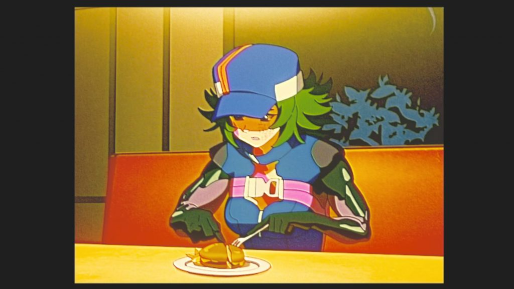
Roman did this woman dirty filming this.Omi shows up in the back half of the show, after viewers are led to believe that the Snake clan has been wiped out to a single entity, D, which instead leaves us with questions of how many people actually died and how many survived. Omi, unlike D, has opted to try and make her life about more than just seeking revenge, and their initial tense meeting leads to further conflict down the line. But rarely in a revenge story is the person seeking revenge directly confronted by an equally wronged party, asking them what the point of what they are doing serves. D, unfortunately, refuses to see the forest for the trees, or at least, has deluded himself into believing that his revenge is all that matters.
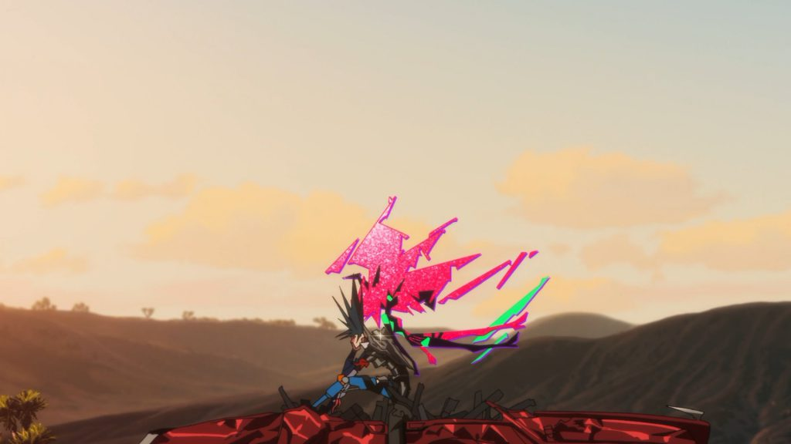
But when Roman captures his smile following his first day with Capri, the actual truth is something that D refuses to acknowledge until the end of the series, and until it is perhaps too late for him to have pursued a different path: that he could have been happy, that he could have lived a life of his own, had he refused to believe that revenge was all that his life, that his surviving, was good for. In the end, D's fate is implied heavily to have burned bright and out, but perhaps his ending is also that he reached the stars with Capri, becoming a legend who blazed his own trail.
I Saw the TV Glow
The final member of the protagonists is Talia, the 15 year old girl who is seemingly obsessed with having her body augmented and upgraded with chrome; when we first meet Talia, she's shown to have replaced her arms, legs, and mouth with various types of implants and augments, giving her an almost insect-like quality to the way she approaches Roman. The animations of Talia eating are... pretty wild, and probably best experienced rather than explained, but Talia's narrative is one of self-determination in the face of a world that seems dead set on telling one how to live.
That's right, Talia's a big ol' trans allegory character. And, as I mentioned in my other review, this isn't something that Cyberpunk 2077 has always handled particularly well. There are some bumps in the road with Talia as well, but not in a way that doesn't actually accomplish the allegory in a compelling way. If anything, the messy and slightly indirect nature of the allegory makes it work, and as the relationship between Talia, Avida, and Kiril (her father, and also a dickhead) is laid bare, it becomes easier to sympathize with why Talia has wanted to live her life as who she wants to be, rather than who others want her to be.
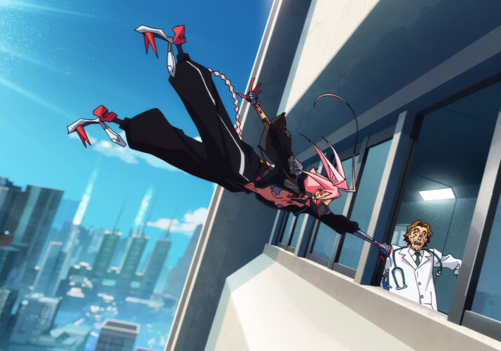
Kiril is the obvious villain, the controlling and uncaring corpo father who simply wants Talia for his own ends; her apparent ability to merge with Capri is more about his corporate success and gain than it is saving Talia from the unnamed disease that is eating away at her organic body. Kiril is, if anything, the less interesting of the two parents when it comes to the trans allegory, because he is simply an uncaring father who doesn't see his child for who they are: she is not a person to Kiril, and her desires, dreams, or thoughts don't matter to him. She is a means to an end, she is property, and her body is his to control and mold into what he wants.
The shocker, really, is Avida. The story starts with Avida worried about Talia and wanting her brought home safely, leading her to offer to pay Weak and lie to him that she is his daughter. Avida's concern seems genuine, and her sorrow over Talia's illness seems like it will lead to a narrative reconciliation where Talia's pursuit of augmentation is not that she wishes to shun her mother, but that the two are simply trying to pursue what they feel is best for Talia's life. The reality is... complicated. In the final act, Avida is asked to select a new body for Talia, one that she can, supposedly, be "transferred" into. Avida hesitates, complaining that she will no longer be "her" Talia, that the body she has is not "hers", and by "hers", she means HERS. Avida, much like her odious husband, similarly views Talia as something that belongs to her, and something that should look and resemble what she wants, namely, the "Baby" she gave birth to and the image of "Talia" she constructed.
Perhaps it may seem obvious, but this doubled up set of rejection for Talia's identity and personhood is pretty common for many trans people; parents who can only see 'their little boy' or 'little girl', who worry that 'you're going to make a change you can't take back' not out of concern for the individual, but for what they feel they are losing in the process. the trans person's self-determination, happiness, and quality of life aren't considered in the equation, because their identity doesn't fully belong to them: it belongs to their "family", the same one that wants to control, reject, or restrict them.
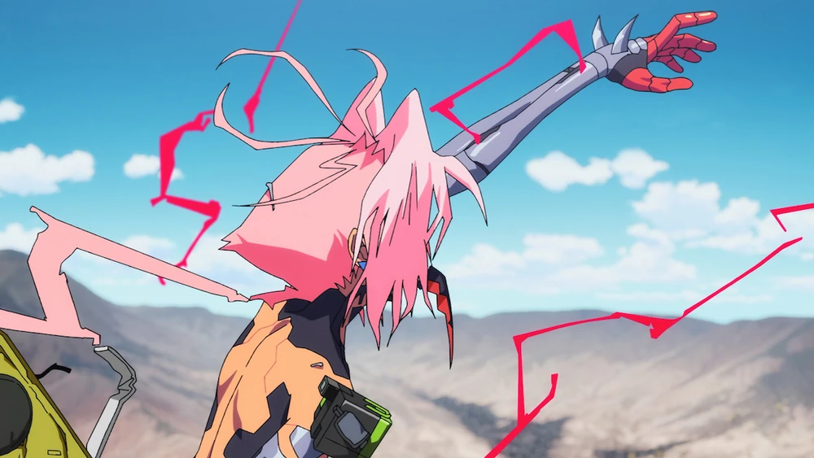
But then there is Roman, and by extension, Weak.
Weak rises up to be the "dad" Talia never had, a person who knows her experiences and the fears and concerns, while also trying to offer her camaraderie and support. There's a fun throughline to viewing Weak as a similar trans allegory, trying to build a bridge between trans elder and trans junior between the two and their rocky relationship as it unfolds over the course of the show. At the end, as he tearfully drives them into the sunset, it is hard to view them as anything but father and daughter, even with her fate left up in the air; whatever it is, she gets to live it on her own terms.
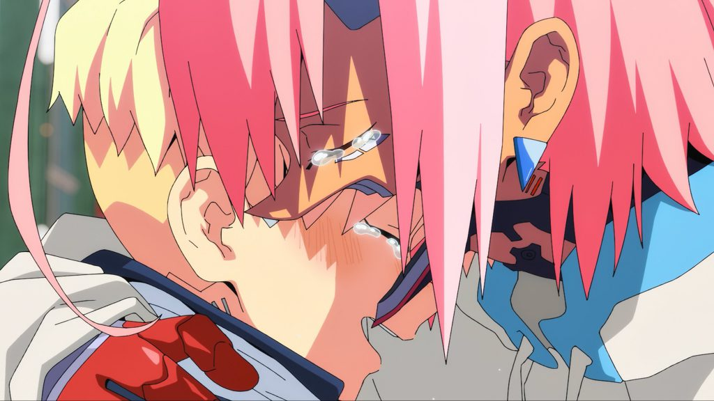
Roman, her "boyfriend", is similarly interesting. Whereas other people see Talia for what she "is" to them, Roman simply sees her as what he initially captured on his camera: striking, beautiful, and perfect. Roman and Talia's interactions are sweet and fluffy while also tragic, the sort of young love that's doomed by the narrative in numerous ways. Talia even confesses to liking Roman, while he remains unable to answer well until the final moments of the show, and their "date" at a drive-in is almost shockingly wholesome for a series like Cyberpunk. Before she drives off with Weak, Roman confesses that she was always perfect, which she quips back at with "what a line". To Roman, Talia is who she is, with no expectations or demands: she is just perfect.
I, Robot
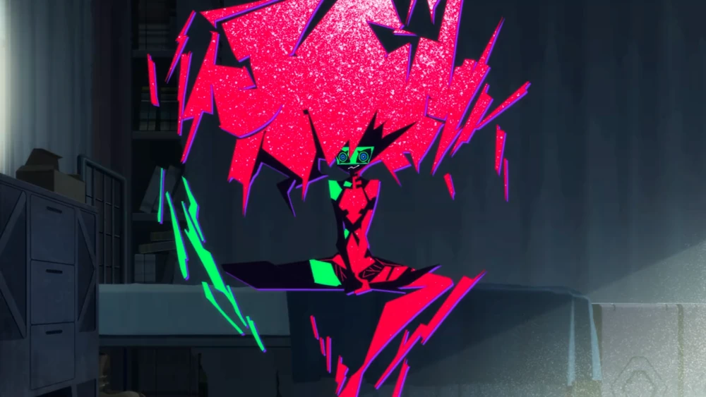
Capri is the character that haunts the background of Edgerunners 2, a constructed identity who doesn't make her way into the show until the middle third of the story. We get bits and pieces of how Capri, or Capricorn, was made, and what she can do, but she serves almost as a magical MacGuffin more than she does exist as an individual character. She has motives and wants, albeit again not fully explored or identified; what we do know is that she seems to really want to reach "the sky".
Capri's actual point of interest to me, though, is just how Studio Trigger she is. Capri resembles a character out of Panty and Stocking with Garterbelt, a sort of stocky, cartoonishly shaped amalgam of colors and shapes that resembles a feminine form. She's capricious and playful, but similarly juvenile as many depictions of artificial life tends to be. Her biggest benefit to the show is that she allows Cyberpunk 2077, even with all of its sci-fi ridiculousness, to escape the bounds of reality; when she's tagging along with D, his hair spikes up and gives him the ability to do just about anything, and when Talia merges with her later, she begins morphing into a Tetsuo the Iron Man horror, at one point resembling a cobbled together cockroach. She provides the "anime" to the animated series in a few fashions, even if her overall narrative themes aren't explored much beyond establishing what she is.
The Island of Dr. Moreau
Before moving on to the final part of this overarching review/analysis, I have to spend some time talking about my favorite character. This character doesn't show up for more than 2/3rds of the series, and has less screentime than just about any character other than Capri, but I absolutely love this vile little cockroach of a woman. Since you're probably only reading this if you already watched the show, I bet you can immediately guess who I'm thinking about, but if you're unsure, I'm talking about the one, the only, Kyoko.
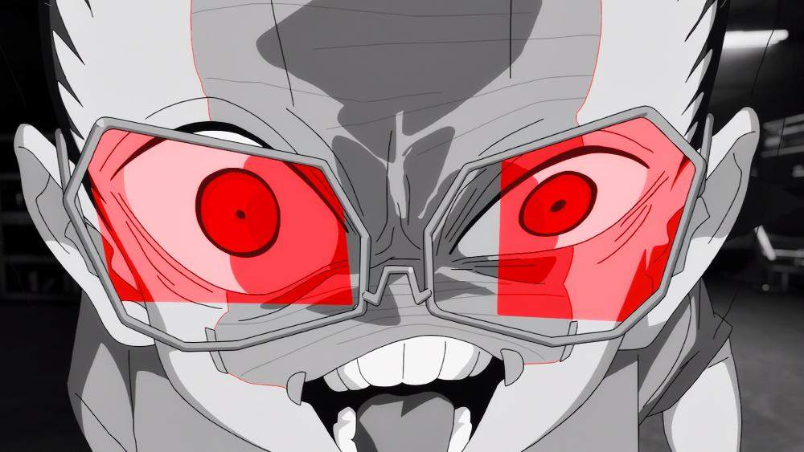
Look at this fucking creature.
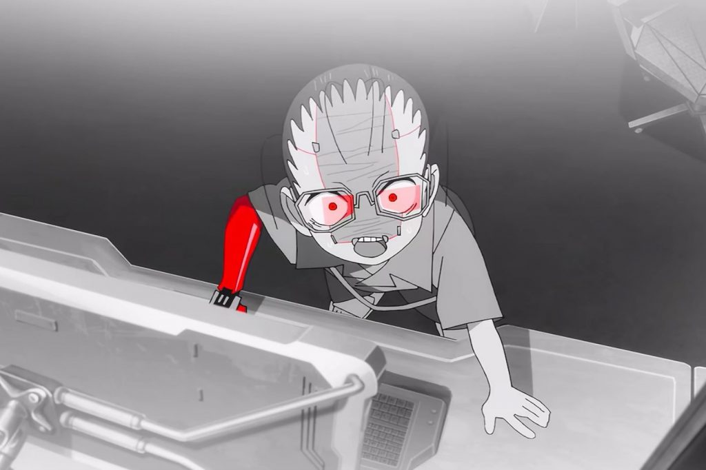
Kyoko is the character responsible for a good portion of the plot of Edgerunners 2 happening, and she's doing so dressed in god's ugliest fit (seriously, those chunky pink croc-like sandals are something else); she is the primary person behind Capri's creation, she is also the person who steals Capri back from King's crew, and she has knowledge of what happened to D's clan (and similarly, who Talia is). She is a vile, awful person, a "mad scientist" type who sees no obstacle in her pursuit of her creation's success, which also makes her a fascinating and entertaining little problem. In theory, Kyoko is an antagonist who only wishes to get Capri back and have her fully under her control, but she also wants Capri to exist and succeed, which ironically brings her to saving the day with the rest of the crew at the end of the series.
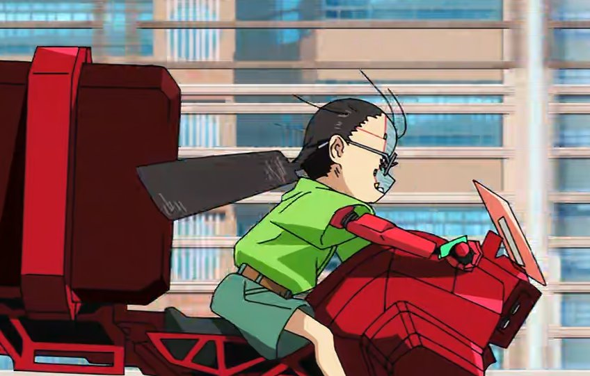
Look at that hair.I love morally terrible characters like Kyoko, because when they're done well, they add layers and depth to the cast. Kyoko would very likely never be friends with anyone in the cast, and D even tries to kill her at one point for her role in what happened to his clan; she also causes Talia to be kidnapped by her father at the end, and yet it is, at least to me, impossible to hate her. She dies, like all terrible people in media tend to, or at least we are led to believe she does; no matter what, D and Capri bring her along for their 'final show' to give her a send off in style for what she made possible, and I find it hard to believe Kyoko would want it any other way.
Robot Carnival
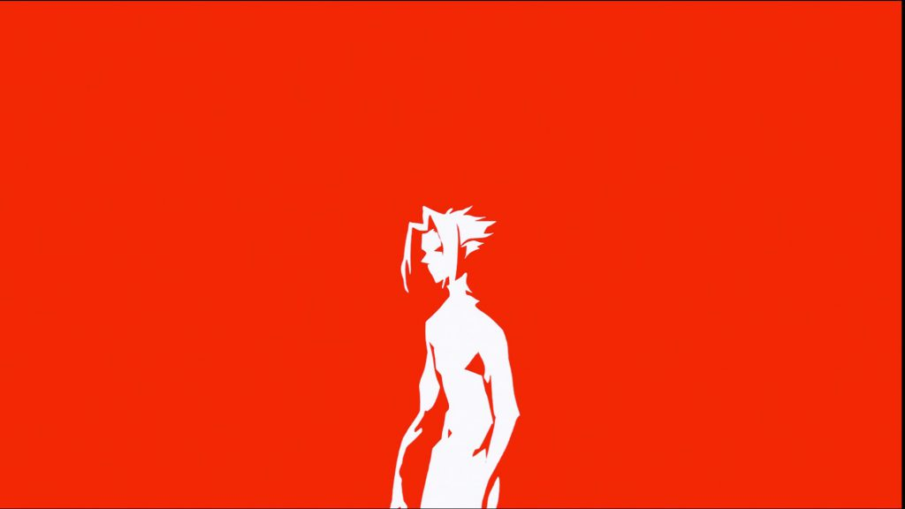
Although I've spent a good portion of this (okay, almost all of it) talking about the cast, themes, and plot, I want to give Kai Ikarashi his flowers: Edgerunners 2 is a beautiful show. It is not the most technically impressive animated series I've ever seen, in that it is looking to blow the roof off of the place with set pieces, but instead it wants to utilize animation and film techniques in ways that animation allows that aren't always possible with live action. And that is also to say that the animation here IS very good, some of Studio Trigger's best, all framed around coherent and visually interesting storytelling. There is a lot of care here to make Night City feel alive; characters drink and eat, they travel, they live lives, and the show does its best to give us small pockets of that life between the bigger set pieces.
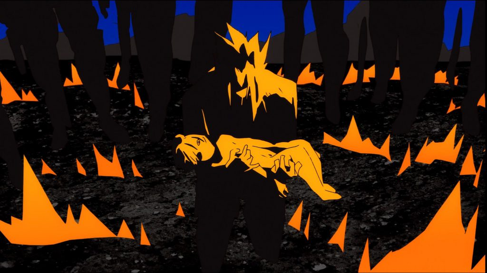
Some of the most interesting pieces are those of D's nightmares and fears, which are often rendered as completely flat, dual or monotone colored sequences, often using bright primary colors and white. Capri is similarly colorful and garish, making every scene she appears in almost feel like it was from the wrong series, given how she clashes with the overall aesthetic. Ikarashi's vision is very clear, and appreciating the show visually for it adds a lot of depth to the entire production; since the series has so much it wants to invest into thinking about film, art, and creation, it becomes clear that the production had to similarly consider ways to show that off.
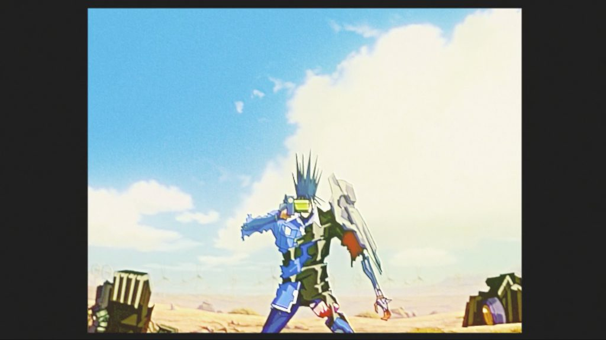
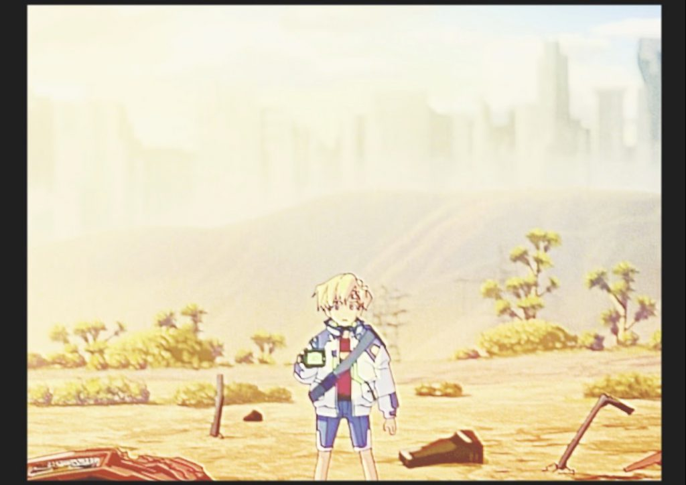
In the climax of the show, one of the most stark scenes is that of D picking up a camera, aiming it at Roman. it is the first, and only, time the that we see Roman on film in the way he's captured others, revealing just how small, vulnerable, and human he is. And that, when he needs to express earnestly to Roman in their final conversation, Ikarashi cuts to a final shot of D looking over the top of the camera at Roman, making direct eye contact with him, calling back to Roman's words in the first episode: that the screen, the camera, creates a barrier between the viewer and the creator.
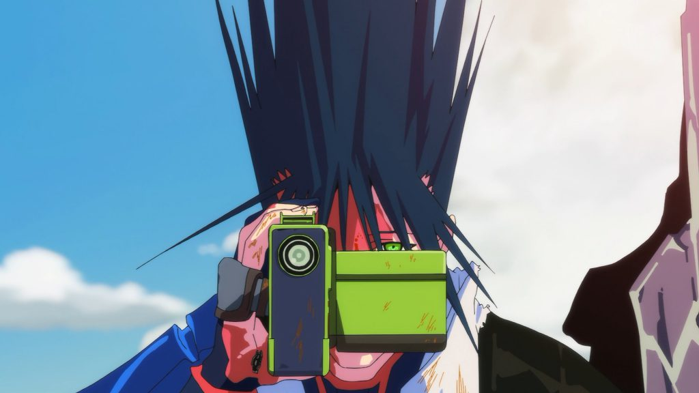
Seeya, sunshine.Cinema Paradiso
I've spoken a lot about the cast, primarily as vectors to explore the ways in which their stories provide interesting, unique insights into what Edgerunners 2 wants to do. A lot of this is due to the initial reactions I've noticed about the series, which is that people seem to have wanted Edgerunners 1 again, or a story that is similarly bleak or dark; Edgerunners 2 is plenty dark, but it has a very different message and scope that it wants to explore. Edgerunners 2 is a story about stories, about connections, and about humanity, set in a world in which people care very little for each other and life is cheap.
It feels difficult to separate Edgerunners 2 from the world in which it was produced; early on in the show, Roman discusses how Braindances, the Cyberpunk 2077 "entertainment" form that is beamed into one's brain, lacks the same type of craft and connection that film and movies can produce. Roman wants to make movies, because the artifice of making movies is what gives them their humanity: a person has to film it, a person has to watch it. And it was impossible to read this scene as neutral in a period in which AI videos are clogging up social media, sites likes YouTube, and other social media apps, soulless, talentless, craftless things that are not made by people and, truthfully, are not made to even be enjoyed by people, but instead numbers: views, clicks, likes, whatever.
Yupi, the woman that inserts herself between Roman and D, fills a similar role: the pursuit of a creative medium not for what it says or conveys, but for how it can divide and create capital. Yupi says she cares about taking down Arasaka, but the reality is that her selfish desire is purely nihilistic and self-serving: she loves seeing D get violent, she loves the money it brings her, the fame, the crowd, the success, all of which she begins to trade for a loss of humanity; people are killed, people that don't even have anything to do with Arasaka, and all of them are turned into spectacle, bereft of meaning. Of course, media lead times can't predict events, but a show that grapples with the destructive carnivale of protest turning into little more than pornographic displays of violence, of sound and fury meaning nothing, certainly couldn't land at a better time than it did; and, realistically, unlike many other narratives that grapple with protest and violence, Edgerunners 2 doesn't even try to tow the line that violence, protest, revolt and fighting are not the answer, just that, for the Yupi's of the world, it has little to do with what is being fought for, and all to do with creating an entertaining mess.
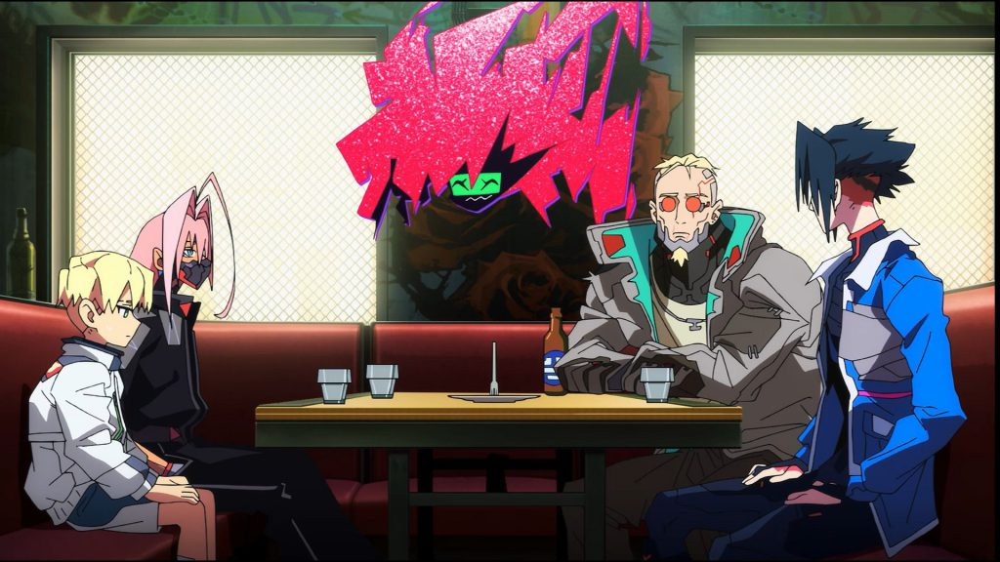
If there is anything that Edgerunners 2 wants to say, it is as noted before: that humans live through telling, sharing, and remembering stories. It is how we convince ourselves to do things, whether we're lying to ourselves or not, and it is how we connect with others. The stories we tell ourselves are just as important as those we tell others, and they are also the way in which we become known to other people. What it means to be alive, to live, is to create and share what we create, even if those things are words we share with other people. If anything, Edgerunners also has something to say about fidelity and honesty, that what we see on the screen can tell the truth, depending on how the camera is controlled. Roman's films carry an air of nostalgic passion for the past of making movies, but in the show itself, his films capture the honest, quiet moments of people's lives: D's smile, Talia's joy, his father's craft. As the story draws to a close, Talia, Weak, and Roman all come to their own conclusions on what to do with their lives, to prove that their lives were indeed worth living and pursuing, and that life is a process of stories to be told, shared, and retold; as Roman runs off screen to continue pursuing his dreams, the camera pans up, showing a Night City sky filled not with dark, dystopian shadows, but bright, individual stars.
Hey choom! Did you like this dual review format of non-spoiler and longer-read spoiler version? Let us know in the comments, discord, or email! We really want to hear from you! E-mail us at contact@goonhammer.com, or use the above avenues! Want articles like this linked in your inbox every Monday morning? Sign up for our newsletter. And don’t forget that you can support us on Patreon for backer rewards like early video content, Administratum access, an ad-free experience on our website and more.
Originally published on Goonhammer.


Leave a Comment